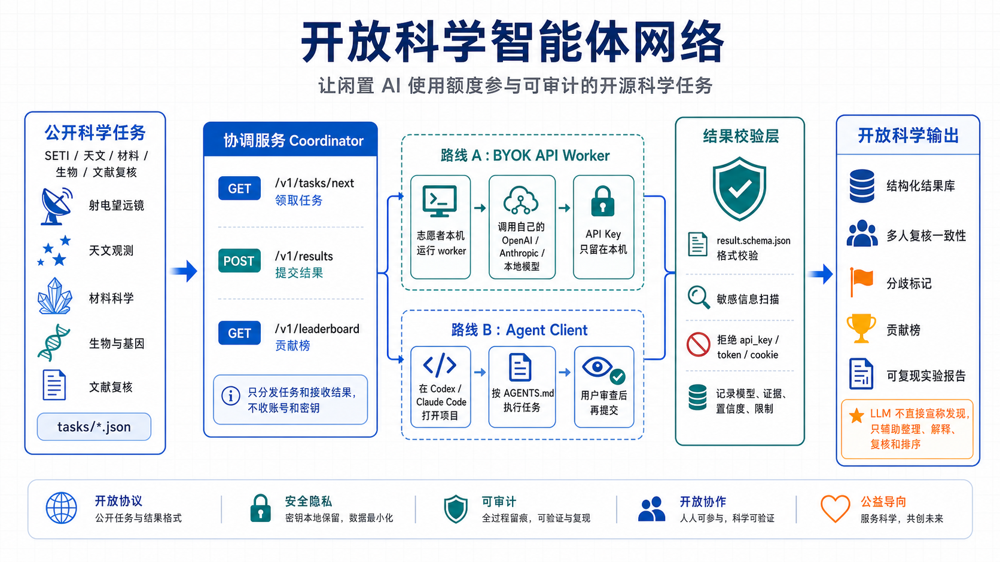

路线 A：BYOK API Worker
志愿者在本机配置自己的 OpenAI、Anthropic 或本地模型环境。 Worker 领取任务、调用模型、生成结构化结果。API Key 不离开本机。
开源 SETI · 志愿者智能体网络
项目支持两种参与方式：有 API 额度的人运行 BYOK Worker； Codex / Claude Code 用户直接在自己的客户端里领取任务、生成结果、人工审查后提交。 第一版聚焦寻找外星文明相关的公开天文数据复核。
How it works

志愿者在本机配置自己的 OpenAI、Anthropic 或本地模型环境。 Worker 领取任务、调用模型、生成结构化结果。API Key 不离开本机。
Codex / Claude Code 用户打开仓库，按 AGENTS.md 领取任务。 用户能审查每一步，最后决定是否提交结果。
结果必须包含证据、置信度、限制和推荐动作。LLM 不直接宣布发现， 只辅助整理、解释、复核和排序。
Run locally
当前原型包含一个合成 SETI 候选信号复核任务、dry-run worker、 本地协调服务、结果 schema 校验和敏感信息扫描。
git clone https://github.com/chaochaoweb3/openseti-agent-network.git
cd openseti-agent-network
python3 -m venv .venv
. .venv/bin/activate
pip install -e ".[test]"
pytest
scripts/run-task --task tasks/openseti-demo-001.json \
--output results/demo-result.json \
--dry-run
scripts/validate-result results/demo-result.jsonSafety boundary
Acknowledgements
这个项目的想法部分受到 X 用户 @disksing 相关讨论启发。这里的致谢仅表示灵感来源，不代表对方参与、认可或为本原型负责。